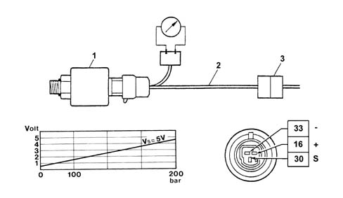

1058AA Check on operation of Methane pressure sensor
- Path
- Test > 10 ENGINE > 1058 CNG FUEL SYSTEM > 1058A gas circuit multi point injection > 1058AA Check on operation of Methane pressure sensor
- Kind
- test / check procedure
- Applies to
- all engines; all production periods; only with equipment: BIPOWER
- Interactive page
- https://sloeber94.github.io/elrnDB-fDbl/en/#/2585350
Applies to: all engines; all production periods; only with equipment: BIPOWER
The electrical check is carried out placing a bridge (2) to be constructed locally (not available as spares) between the sensor (1) and the connector (3) in such a way as to supply the sensor and measure the output signal using a multimeter (voltmeter).
Place the bridge between the sensor and the connector.
Check that with the ignition ON the sensor supply is about 5 Volt.
Check that there is an output voltage of between 0.5 V (with the tank full) and 4.5 V with the canisters completely full with a pressure of 200 bar.
